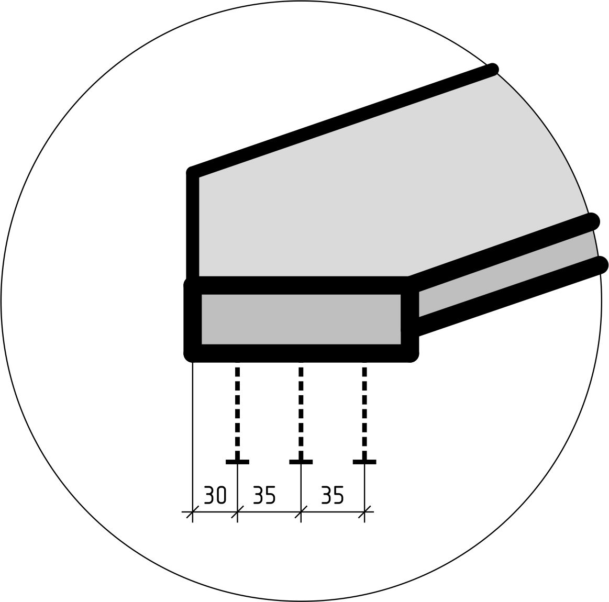
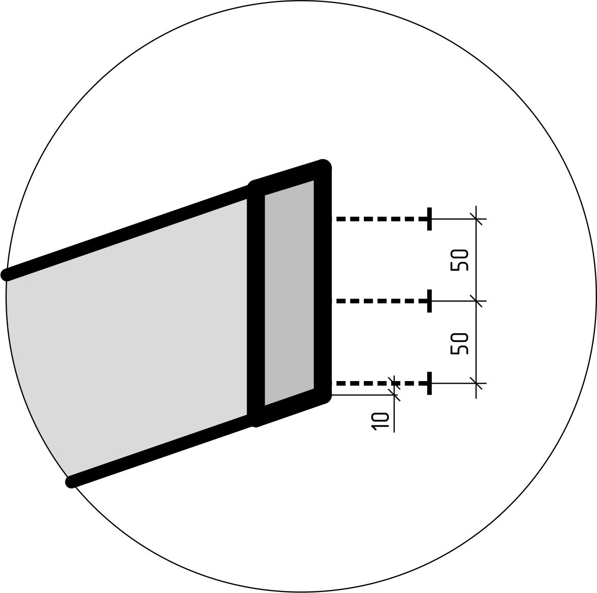
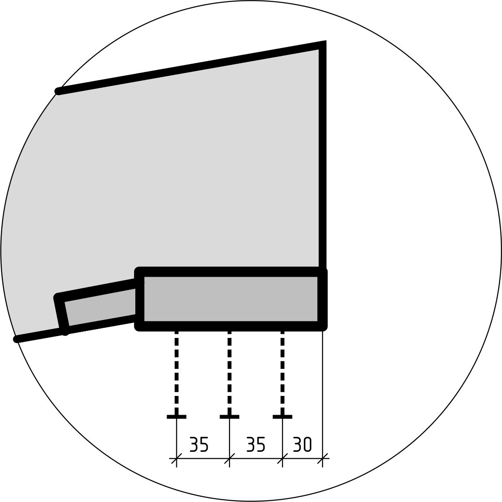
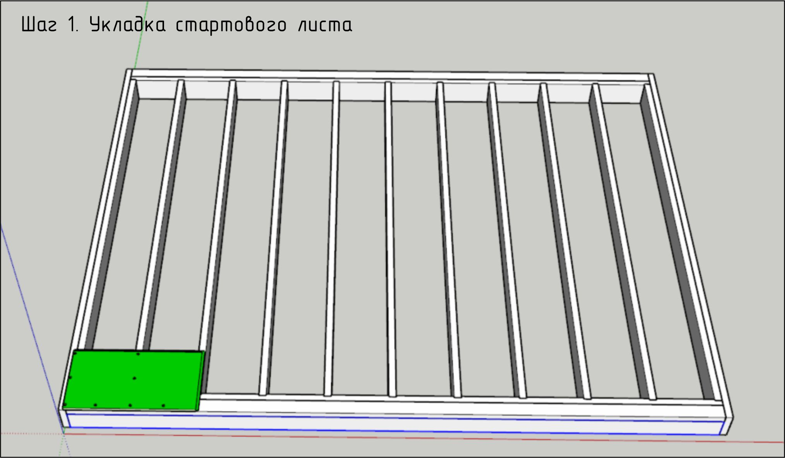
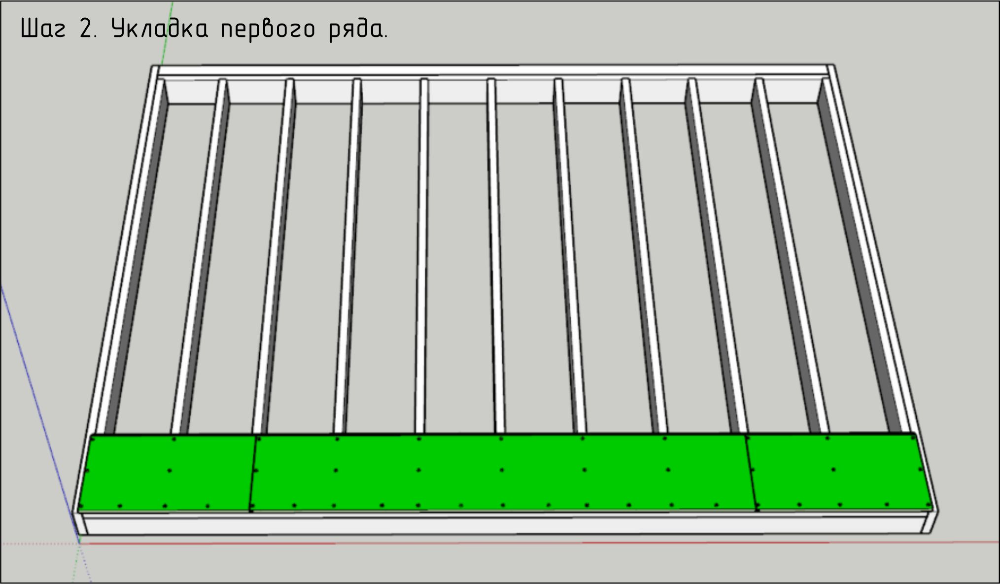
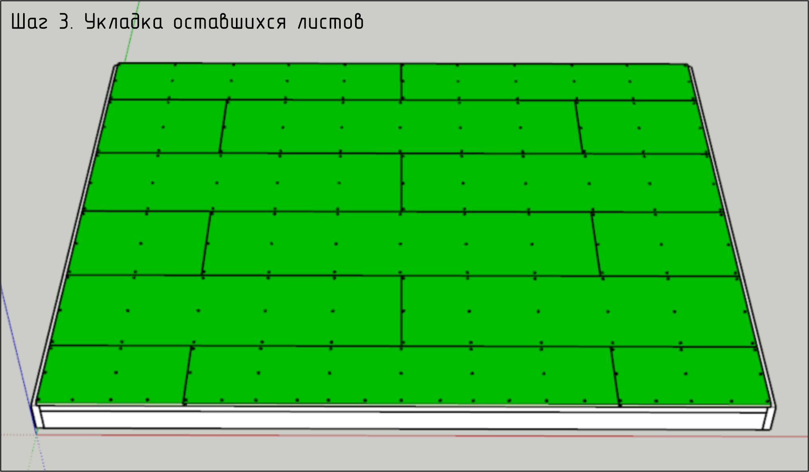

5.2.2 Сборка панели кровли
-
5.2.2.1. Сборка каркаса панели
Необходимая документация для выполнения работ: Раздел КС.ПК. Альбом сборки типовых узлов каркаса.
Производимые операции:
- Просверлить во фрезерованных пазах под стропила по 3 отверстия для крепежных саморезов. Привязка отверстий указана на схемах ниже.
- Собрать каркас в перевернутом положении, чтобы сторона каркаса, обшиваемая ТСП, располагалась сверху. При сборке каркаса выравнивать балки и стропила по верхней плоскости. Крепить балку на 3 самореза 6х140 в каждый торец стропила.
- Установить закладные для крепежа панелей ТСП. Закладные не должны выступать за пределы стропил.
  
Контрольные параметры:
- Внешние габариты панели. Допуск: +-2мм.
- Отклонения от верхней плоскости панели (плоскости, зашиваемой ТСП). Допуск: 0 -2мм.
- Диагонали панели. Допуск +-3мм.
- Количество саморезов в узлах крепления: соответствует требованиям конструкционного узла.
По факту контрольных замеров ставится отметка в паспорте ОТК.
Необходимый инструмент и оборудование:
- Аккумуляторный шуруповерт с зажимным патроном.
- Аккумуляторный шуруповерт ударный.
- Рычаг для выгибания досок.
- Киянка.
- Рулетка 10м.
- Уголок плотницкий металлический.
- Карандаш простой.
- Сверло d6х100мм.
- Бита PZ3.
Расходные материалы:
- Саморез ЖЦ 6х140.
- Саморез ЖЦ 6х120.
5.2.2.1. Сборка каркаса панели. Ссылка на фотографии производства работ:

-
5.2.2.2. Укладка листового материала на каркас панели
Необходимая документация для выполнения работ: Раздел КС.ПТ/ПФ/ПВ.
Производимые операции:
ГВОЗДИ использовать запрещено!
- Раскладку начинать с указанного в чертеже листа. Листы к лагам клеить на ПВА-М. Закрепив стартовый лист, произвести контрольный замер диагоналей панели пола. Поперечные стыки листов ДСП должны попадать на лаги. Поперечный стык листов не над лагами не допускается. Стыки листов проклеивать ПВА-М. Крепить саморезами ЖЦ 5х60 по 3шт. в каждую лагу. Отверстия под саморезы зенковать. Шляпка не должна выступать за пределы ДСП. Продольный стык только проклеивать. ВАЖНО! Крепление листов производить от одного края листа к противоположному, чтобы лист равномерно разглаживался по длине и не давал коробления-прогиба по центру.  
- Каждый начальный лист подрезать таким образом, чтобы поперечный стык приходился на лагу. 
Контрольные параметры:
- Совпадение с проектными отступами. Допуск: 0 -2мм.
- Отклонения от верхней плоскости панели. Допуск: 0 -2мм.
- Отсутствие выступающих шляпок саморезов.
- Отсутствуют перепады на стыках листов.
По факту контрольных замеров ставится отметка в паспорте ОТК.
Необходимый инструмент и оборудование:
- Аккумуляторный шуруповерт с зажимным патроном.
- Аккумуляторный шуруповерт ударный.
- Рычаг для выгибания досок.
- Киянка.
- Рулетка 10м.
- Уголок плотницкий металлический.
- Карандаш простой.
- Сверло d4х50мм.
- Сверло зенковочное.
- Бита PZ3.
- Кисть 50мм.
Расходные материалы:
- Саморез ЖЦ 5х60.
- Клей ПВА-М.
5.2.1.2. Укладка ДСП на каркас панели. Ссылка на фотографии производства работ: